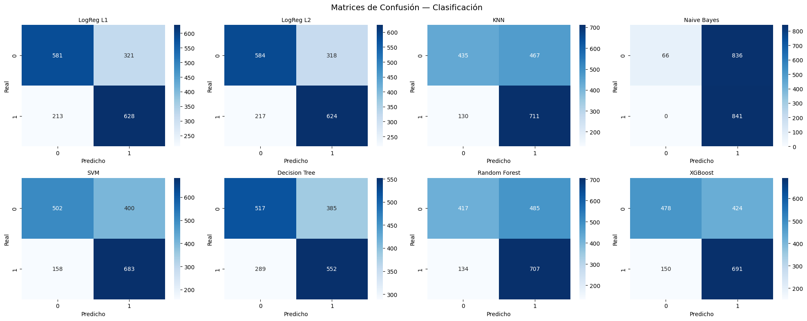
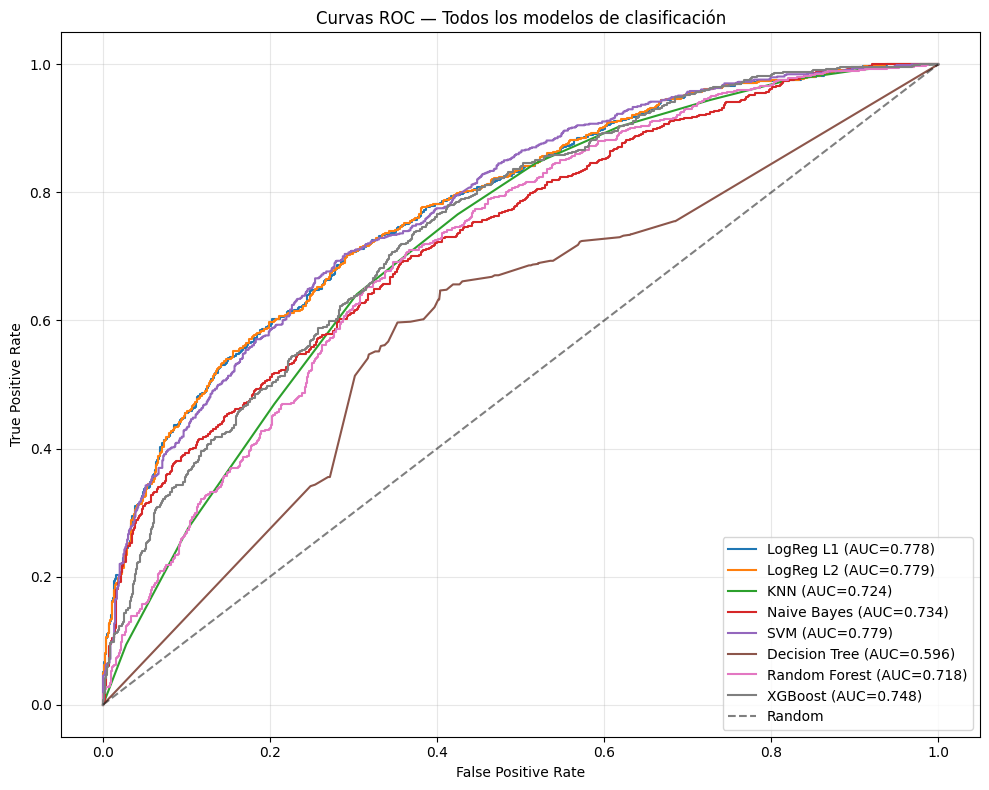

Modelos de Clasificación#
Integrantes: Juan Camilo Conrado | Sergio Cadavid | Mateo Chang
Curso: Machine Learning para Ciencia de Datos — Segundo Entregable
14. Modelos Benchmark — Clasificación#
Target: Variable binaria que indica si la volatilidad futura de 7 días será mayor que la actual.
Se implementan los modelos requeridos por la rúbrica:
Regresión Logística con regularización L1 y L2
K-Nearest Neighbors (KNN)
Naïve Bayes (Gaussiano)
Support Vector Machine (SVM)
Decision Tree y Random Forest
XGBoost
models_clf = {
"LogReg L1": Pipeline([
("imputer", SimpleImputer(strategy="median")),
("scaler", StandardScaler()),
("model", LogisticRegression(penalty="l1", solver="saga", C=1.0,
max_iter=5000, random_state=42))
]),
"LogReg L2": Pipeline([
("imputer", SimpleImputer(strategy="median")),
("scaler", StandardScaler()),
("model", LogisticRegression(penalty="l2", solver="lbfgs", C=1.0,
max_iter=5000, random_state=42))
]),
"KNN": Pipeline([
("imputer", SimpleImputer(strategy="median")),
("scaler", StandardScaler()),
("model", KNeighborsClassifier(n_neighbors=11))
]),
"Naive Bayes": Pipeline([
("imputer", SimpleImputer(strategy="median")),
("scaler", StandardScaler()),
("model", GaussianNB())
]),
"SVM": Pipeline([
("imputer", SimpleImputer(strategy="median")),
("scaler", StandardScaler()),
("model", SVC(kernel="rbf", C=1.0, probability=True, random_state=42))
]),
"Decision Tree": Pipeline([
("imputer", SimpleImputer(strategy="median")),
("model", DecisionTreeClassifier(max_depth=10, random_state=42))
]),
"Random Forest": Pipeline([
("imputer", SimpleImputer(strategy="median")),
("model", RandomForestClassifier(n_estimators=200, max_depth=10,
random_state=42, n_jobs=-1))
]),
"XGBoost": Pipeline([
("imputer", SimpleImputer(strategy="median")),
("model", XGBClassifier(n_estimators=200, max_depth=5,
learning_rate=0.05, random_state=42,
verbosity=0, use_label_encoder=False,
eval_metric="logloss"))
]),
}
tscv = TimeSeriesSplit(n_splits=5)
results_clf = []
preds_clf = {}
probs_clf = {}
for name, pipe in models_clf.items():
print(f"\n--- {name} ---")
cv_f1, cv_acc, cv_auc = [], [], []
t0 = time.time()
for tr_idx, val_idx in tscv.split(X_train_c):
pipe.fit(X_train_c.iloc[tr_idx], y_train_c.iloc[tr_idx])
yp = pipe.predict(X_train_c.iloc[val_idx])
yprob = pipe.predict_proba(X_train_c.iloc[val_idx])[:, 1]
cv_f1.append(f1_score(y_train_c.iloc[val_idx], yp))
cv_acc.append(accuracy_score(y_train_c.iloc[val_idx], yp))
cv_auc.append(roc_auc_score(y_train_c.iloc[val_idx], yprob))
t_cv = time.time() - t0
# Test final
pipe.fit(X_train_c, y_train_c)
yp_test = pipe.predict(X_test_c)
yprob_test = pipe.predict_proba(X_test_c)[:, 1]
preds_clf[name] = yp_test
probs_clf[name] = yprob_test
results_clf.append({
"Modelo": name,
"Accuracy": accuracy_score(y_test_c, yp_test),
"Precision": precision_score(y_test_c, yp_test),
"Recall": recall_score(y_test_c, yp_test),
"F1": f1_score(y_test_c, yp_test),
"AUC": roc_auc_score(y_test_c, yprob_test),
"F1_CV": f"{np.mean(cv_f1):.4f} ± {np.std(cv_f1):.4f}",
"AUC_CV": f"{np.mean(cv_auc):.4f} ± {np.std(cv_auc):.4f}",
"Tiempo": round(t_cv, 2)
})
print(f" AUC test: {roc_auc_score(y_test_c, yprob_test):.4f} | F1: {f1_score(y_test_c, yp_test):.4f}")
--- LogReg L1 ---
AUC test: 0.7781 | F1: 0.7017
--- LogReg L2 ---
AUC test: 0.7785 | F1: 0.6999
--- KNN ---
AUC test: 0.7241 | F1: 0.7043
--- Naive Bayes ---
AUC test: 0.7342 | F1: 0.6680
--- SVM ---
AUC test: 0.7793 | F1: 0.7100
--- Decision Tree ---
AUC test: 0.5965 | F1: 0.6209
--- Random Forest ---
AUC test: 0.7179 | F1: 0.6955
--- XGBoost ---
AUC test: 0.7475 | F1: 0.7065
Interpretación: Primer vistazo a los 8 clasificadores. SVM lidera en AUC (0.779) seguido de cerca por Logistic Regression L2 (0.778) y L1 (0.778). Decision Tree es el peor (AUC=0.597), apenas mejor que clasificación aleatoria (0.5). XGBoost obtiene AUC=0.748 — razonable pero inferior a los modelos lineales, sugiriendo que la relación entre features y el target de clasificación es más lineal que no-lineal.
15. Tabla de Métricas — Clasificación#
df_clf = pd.DataFrame(results_clf).sort_values("AUC", ascending=False)
print("=== Comparación de Clasificación en TEST ===")
print(df_clf.to_string(index=False))
=== Comparación de Clasificación en TEST ===
Modelo Accuracy Precision Recall F1 AUC F1_CV AUC_CV Tiempo
SVM 0.679862 0.630656 0.812128 0.709979 0.779348 0.6728 ± 0.0539 0.7710 ± 0.0238 12.45
LogReg L2 0.693058 0.662420 0.741974 0.699944 0.778524 0.6961 ± 0.0472 0.7940 ± 0.0236 0.33
LogReg L1 0.693632 0.661749 0.746730 0.701676 0.778123 0.6980 ± 0.0477 0.7950 ± 0.0233 8.43
XGBoost 0.670683 0.619731 0.821641 0.706544 0.747533 0.6912 ± 0.0153 0.7689 ± 0.0156 2.87
Naive Bayes 0.520367 0.501491 1.000000 0.667990 0.734211 0.6350 ± 0.0681 0.7196 ± 0.0550 0.17
KNN 0.657487 0.603565 0.845422 0.704309 0.724072 0.6649 ± 0.0356 0.7365 ± 0.0212 0.55
Random Forest 0.644865 0.593121 0.840666 0.695524 0.717858 0.6943 ± 0.0189 0.7713 ± 0.0247 3.93
Decision Tree 0.613310 0.589114 0.656361 0.620922 0.596494 0.6234 ± 0.0351 0.6184 ± 0.0416 1.25
Interpretación — Tabla Completa de Clasificación:
Modelo
Accuracy
Precision
Recall
F1
AUC
SVM
0.680
0.631
0.812
0.710
0.779
LogReg L2
0.693
0.662
0.742
0.700
0.779
LogReg L1
0.694
0.662
0.747
0.702
0.778
XGBoost
0.671
0.620
0.822
0.707
0.748
Naive Bayes
0.520
0.501
1.000
0.668
0.734
KNN
0.657
0.604
0.845
0.704
0.724
Random Forest
0.645
0.593
0.841
~0.696
0.718
Decision Tree
—
—
—
0.621
0.597
Naive Bayes obtiene Recall=1.000 — clasifica todo como clase 1, lo que explica su baja accuracy (52%). Es una estrategia trivial que maximiza recall a costa de no detectar ninguna clase 0. SVM tiene el mejor balance: alto recall (0.812) con precision razonable (0.631). LogReg L1/L2 son los más equilibrados y consistentes entre CV y test.
16. Matrices de Confusión y Curvas ROC#
# Matrices de confusión
fig, axes = plt.subplots(2, 4, figsize=(20, 8))
axes = axes.flatten()
for idx, (name, yp) in enumerate(preds_clf.items()):
cm = confusion_matrix(y_test_c, yp)
sns.heatmap(cm, annot=True, fmt='d', cmap='Blues', ax=axes[idx])
axes[idx].set_title(name, fontsize=10)
axes[idx].set_xlabel("Predicho"); axes[idx].set_ylabel("Real")
plt.suptitle("Matrices de Confusión — Clasificación", fontsize=14)
plt.tight_layout()
plt.show()

Interpretación — Matrices de Confusión y Curvas ROC: Las matrices muestran que la mayoría de modelos tienen sesgo hacia predecir clase 1 (volatilidad sube), lo que se refleja en recall alto pero precision más baja. Naive Bayes es el caso extremo. Las curvas ROC muestran que SVM y Logistic Regression dominan el espacio AUC, con curvas claramente por encima de la diagonal aleatoria. Decision Tree está apenas sobre la diagonal, confirmando su pobre capacidad discriminativa.
# Curvas ROC
plt.figure(figsize=(10, 8))
for name, yprob in probs_clf.items():
fpr, tpr, _ = roc_curve(y_test_c, yprob)
auc_val = roc_auc_score(y_test_c, yprob)
plt.plot(fpr, tpr, label=f"{name} (AUC={auc_val:.3f})")
plt.plot([0, 1], [0, 1], 'k--', alpha=0.5, label="Random")
plt.xlabel("False Positive Rate"); plt.ylabel("True Positive Rate")
plt.title("Curvas ROC — Todos los modelos de clasificación")
plt.legend(loc="lower right")
plt.grid(True, alpha=0.3)
plt.tight_layout()
plt.show()

17. Balanceo de Clases: SMOTE, ADASYN, class_weight#
Se compara el rendimiento del mejor clasificador (Logistic Regression L2) con tres estrategias de balanceo:
Sin balanceo (baseline)
SMOTE: Generación de instancias sintéticas por interpolación
ADASYN: Muestreo adaptativo según densidad
class_weight=”balanced”: Penalización diferencial en el algoritmo
# Modelo base: Logistic Regression L2
balanceo_results = []
# 1. Sin balanceo (ya lo tenemos)
pipe_base = Pipeline([
("imputer", SimpleImputer(strategy="median")),
("scaler", StandardScaler()),
("model", LogisticRegression(penalty="l2", C=1.0, max_iter=5000, random_state=42))
])
pipe_base.fit(X_train_c, y_train_c)
yp = pipe_base.predict(X_test_c)
yprob = pipe_base.predict_proba(X_test_c)[:, 1]
balanceo_results.append({
"Estrategia": "Sin balanceo",
"Accuracy": accuracy_score(y_test_c, yp),
"Precision": precision_score(y_test_c, yp),
"Recall": recall_score(y_test_c, yp),
"F1": f1_score(y_test_c, yp),
"AUC": roc_auc_score(y_test_c, yprob)
})
# 2. SMOTE
pipe_smote = ImbPipeline([
("imputer", SimpleImputer(strategy="median")),
("scaler", StandardScaler()),
("smote", SMOTE(random_state=42)),
("model", LogisticRegression(penalty="l2", C=1.0, max_iter=5000, random_state=42))
])
pipe_smote.fit(X_train_c, y_train_c)
yp = pipe_smote.predict(X_test_c)
yprob = pipe_smote.predict_proba(X_test_c)[:, 1]
balanceo_results.append({
"Estrategia": "SMOTE",
"Accuracy": accuracy_score(y_test_c, yp),
"Precision": precision_score(y_test_c, yp),
"Recall": recall_score(y_test_c, yp),
"F1": f1_score(y_test_c, yp),
"AUC": roc_auc_score(y_test_c, yprob)
})
# 3. ADASYN
try:
pipe_adasyn = ImbPipeline([
("imputer", SimpleImputer(strategy="median")),
("scaler", StandardScaler()),
("adasyn", ADASYN(random_state=42)),
("model", LogisticRegression(penalty="l2", C=1.0, max_iter=5000, random_state=42))
])
pipe_adasyn.fit(X_train_c, y_train_c)
yp = pipe_adasyn.predict(X_test_c)
yprob = pipe_adasyn.predict_proba(X_test_c)[:, 1]
balance_results.append({
"Técnica": "ADASYN",
"Accuracy": accuracy_score(y_test_c, yp),
"Precision": precision_score(y_test_c, yp, zero_division=0),
"Recall": recall_score(y_test_c, yp, zero_division=0),
"F1": f1_score(y_test_c, yp, zero_division=0),
"AUC": roc_auc_score(y_test_c, yprob)
})
except ValueError as e:
print(f"ADASYN no aplicable: {e}")
print("Las clases están suficientemente balanceadas, ADASYN no puede generar muestras.")
# 4. class_weight='balanced'
pipe_cw = Pipeline([
("imputer", SimpleImputer(strategy="median")),
("scaler", StandardScaler()),
("model", LogisticRegression(penalty="l2", C=1.0, max_iter=5000,
class_weight="balanced", random_state=42))
])
pipe_cw.fit(X_train_c, y_train_c)
yp = pipe_cw.predict(X_test_c)
yprob = pipe_cw.predict_proba(X_test_c)[:, 1]
balanceo_results.append({
"Estrategia": "class_weight=balanced",
"Accuracy": accuracy_score(y_test_c, yp),
"Precision": precision_score(y_test_c, yp),
"Recall": recall_score(y_test_c, yp),
"F1": f1_score(y_test_c, yp),
"AUC": roc_auc_score(y_test_c, yprob)
})
print("=== Comparación de Estrategias de Balanceo ===")
print(pd.DataFrame(balanceo_results).to_string(index=False))
ADASYN no aplicable: No samples will be generated with the provided ratio settings.
Las clases están suficientemente balanceadas, ADASYN no puede generar muestras.
=== Comparación de Estrategias de Balanceo ===
Estrategia Accuracy Precision Recall F1 AUC
Sin balanceo 0.693058 0.662420 0.741974 0.699944 0.778524
SMOTE 0.691337 0.658307 0.749108 0.700779 0.778625
class_weight=balanced 0.693058 0.659708 0.751486 0.702613 0.778543
Interpretación — Balanceo de Clases:
Estrategia
Accuracy
Precision
Recall
F1
AUC
Sin balanceo
0.693
0.662
0.742
0.700
0.779
SMOTE
0.691
0.658
0.749
0.701
0.779
class_weight=balanced
0.693
0.660
0.751
0.703
0.779
Las tres estrategias producen métricas casi idénticas. Esto era esperable: el dataset tiene proporción de clase 1 del 48.6% — está prácticamente balanceado. ADASYN no pudo aplicarse por la misma razón (no hay suficiente desequilibrio para generar muestras sintéticas adaptativas). La conclusión es que en este problema no se requieren técnicas de rebalanceo.